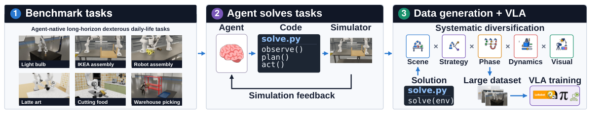
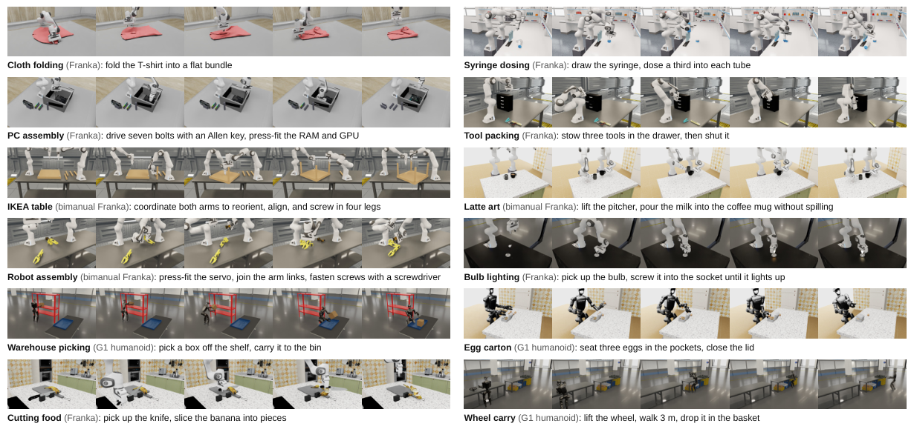

EmbodiedSWE 深度调研笔记
速览
| 项 | 内容 |
|---|---|
| 一句话 | 编程 agent 当"机器人工程师"：在仿真里写 Python 控制程序、执行、看反馈、改代码，解出 28 个长程灵巧任务（最长 30 分钟连续交互）；EMBODIEDSWE-GEN 把单个验证解法扩成多样化轨迹训 VLA——仅用 coding-agent 仿真数据微调的 VLA 完成了真机长程台灯拆解 |
| 冻结 | coding agent（GPT-6 Astra / Claude 等）；被训的 VLA 是产出 |
| 演化 | 两层：agent 解题能力（checkpoint 树/CMA-ES 等工具）→ 数据引擎多样化 |
| 基准 | EMBODIEDSWE-BENCH：接触密集 + 可变形物体 + 长程，5 种本体（Franka/xArm7/Kinova G3/Unitree G1…） |

① 动机：数据瓶颈的三条死路
- 遥操作贵且慢；人类视频有本体错配（人手≠机械爪）；RL 在长程接触密集任务上难收敛。
- 押注：编程 agent 能自主解出这些任务，并提供可扩展的监督——"写代码 → 仿真执行 → 看物体是否到位 → 修代码"的闭环天然适配 agent。
② 架构：Solvers + Data Engine

A. Coding Agents as Solvers
- agent 写 Python 控制程序，在仿真执行，检查日志与图像反馈，迭代精修；
- 配套工具：checkpoint 树（回退到成功的中间状态）、进化参数搜索（CMA-ES 调力矩上限/插入增量等常数）、并行策略扫描、场景查看器、评估日志。
B. EMBODIEDSWE-GEN（数据引擎，五层多样化）
从单个验证解法扩展：
- 替换场景与物体；2. 改变整体策略（组装顺序）；3. 调整任务阶段与中间状态；4. 注入动力学/动作扰动（代码的恢复分支来处理）；5. 改背景/光照/相机。
- 关键洞察：朴素域随机化（换贴图/光照）不够——agent 辅助的逻辑层多样化才是泛化的来源。
③ 数据与结果
| 实验 | 数字 |
|---|---|
| 最强 agent 解题率（GPT-6 Astra，28 任务） | 82%（GPT-5.6 Terra 仅 11%——随底座能力 scaling） |
| 解法迁移 | 跨任务 + 跨本体（把旧解当"提示"加速新任务） |
| VLA scaling（SmolVLA） | 10 条演示 18% → 400 条 69% |
| 真机 | 仅用 coding-agent 仿真演示微调的 VLA 完成台灯拆解长程任务（500 条轨迹） |
| 对照 | 编程 agent 显著优于 PPO（即便 PPO 给了专家调的稠密奖励） |
④ 信息流
任务 → agent 写控制程序 → 仿真执行 → 日志/图像反馈 → 失败：checkpoint 回退 / CMA-ES 调参 / 改逻辑 → 验证通过 → EMBODIEDSWE-GEN 五层多样化 → 大规模轨迹 → 微调 VLA → 真机长程任务
④A 主结果对比（论文 Table 按维度，tex 已验）
按难度（平均分）： Easy 0.77 ± – → Medium ≈0.55 → Hard 0.32 ± 0.15（Opus 5）；对应 hack rate Easy 0% → Hard 12%（难度越高越容易"作弊"）。
按本体（Opus 5 平均分）： Franka 单臂 0.73 / Franka 双臂 0.19（最难的形态）/ G1 人形 0.75。
VLA 微调数据效率（论文 Table 19，成功率 %，400 demos）： tool_packing 94 · pc_gpu 81 · slice 75 · bulb 75 · nut_thread 62 · coffee 34——编程 Agent 生成的演示可直接微调 VLA，数据量-成功率单调上升。
④B 核心消融（Table 18 迁移消融，tex 已验）
| 提示条件 | Score | 成功率 |
|---|---|---|
| similar-task hint | 0.60 ±0.05 | 31% |
| dissimilar-task hint | 0.51 ±0.05 | 17% |
| no hint | （更低） | – |
任务间相似性决定经验可迁移性；hack rate 随难度与套件显著波动（Puzzle 17% vs Packing 0%）——评分器可被钻空子是长程灵巧操作评测的真问题。
⑤ 例子
双臂装 IKEA 桌：agent 先写"左臂扶稳桌腿、右臂拧螺栓"的程序，执行发现螺栓滑丝 → checkpoint 回退到对齐状态 → CMA-ES 把对齐容差调紧 → 通过；GEN 引擎换 5 种桌面材质、3 种螺栓初始位姿、打乱左右臂分工，扩出上千条轨迹训 VLA。
⑥ 局限
- 解题需要大量迭代交互（成本高、慢）；
- 单个解法通常只适配当前任务实例——必须靠 GEN 扩散；
- 仿真解法到真机的迁移目前只在个别任务上验证。
⑦ 簇内定位
- 与 HarnessPAI 的数据反哺、ASPIRE 的技能库并列"探索→训练数据"路线，但 EmbodiedSWE 的产物是VLA 权重而非运行时 harness——"改训练"阵营最完整的一篇；
- 与 RAX：同是 coding agent 解题，RAX 的产物是可直接部署的程序（推理时用），EmbodiedSWE 的产物是训练监督（部署时用 VLA）；
- 28 任务基准（含叠衣、切菜、双臂拿铁拉花）本身就是社区资产。